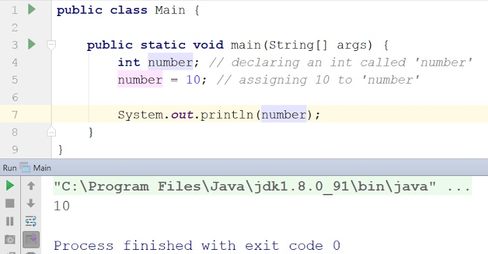
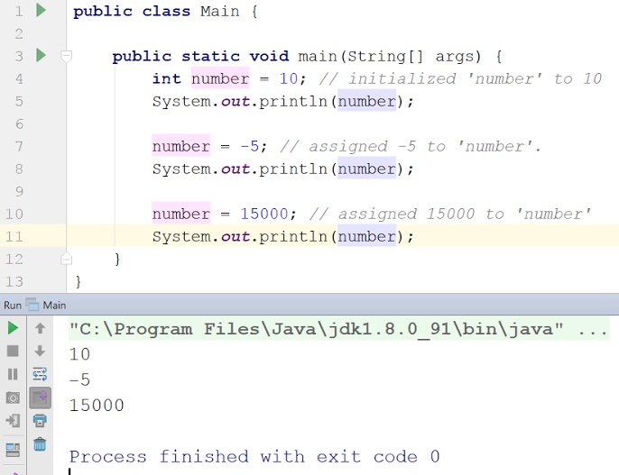

In Java, you can think of variables as placeholders for certain values.
Variables can hold different types of data. Some of the basic data types
in Java are: int, double, String, char and boolean. In this particular
lessons we will be talking about the int and double data types.
Int Data Type:
Int is short for integer. An integer is a whole number, such as 0, 1, 2, 3 etc.
The int variable can only hold integers. To declare an int variable, we simply
write the keyword ‘int’ followed by a name of the variable. The name can be
anything we want. Then we can assign it a value using the assignment operator
(=).

This, when we print the variable ‘number’ using system.out,
we see 10 as output. Note that the phrases after the double slashe
are called comments in java. They are simply notes for the programmer
and have no effect on the program itself.
We can also declare and assign a value in one single line. This is called initializing.

Here we first initialize ‘number’ to 10. As you can see,
following this, we can change the value of ‘number’ to any integer we want,
and it will then hold that new value. It’s important to differentiate between
initializing and assigning. We say that we initialized ‘number’ to 10 because
we gave it that value as soon as we created the variable. We say that we
assigned it a new value (like -5 or 15000) because the variable already existed
with a given value, and we simply changed it.
We printed ‘number’ onto the screen after the initializing and each
assignment so we can see its value change.